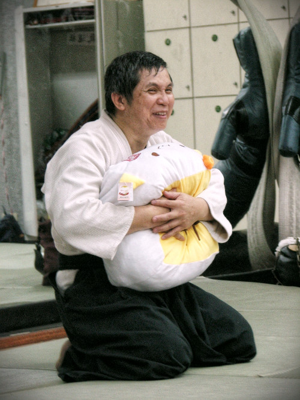
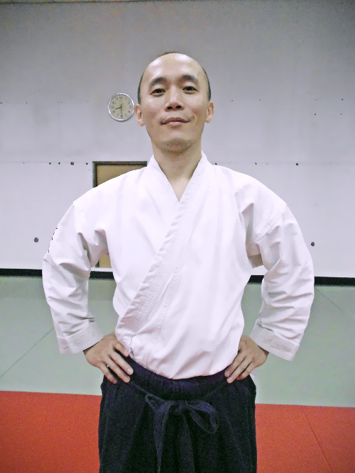
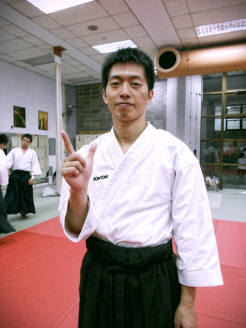

指導老師
Instructors
本社創立之後，由陳昌平老師（六段） 與助教團指導，常在比賽中獲得佳績。陳昌平師範於民國一百年因病逝世。 現今社團由王獻毅老師（五段）、沈彥良老師（四段）及助教團指導。助教團主要由大四有段者，以及畢業的有段者組成。

榮譽教師
陳昌平老師 (六段)

王獻毅老師 (五段)

沈彥良老師 (四段)
→ 陳昌平老師紀念專區
→ In Memory of Chang-Ping Chen Sensei


本社創立之後，由陳昌平老師（六段） 與助教團指導，常在比賽中獲得佳績。陳昌平師範於民國一百年因病逝世。 現今社團由王獻毅老師（五段）、沈彥良老師（四段）及助教團指導。助教團主要由大四有段者，以及畢業的有段者組成。